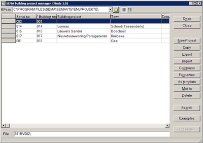
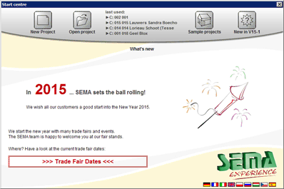
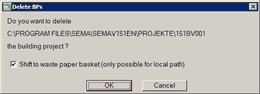

The Basics¶
Building Projects¶
SEMA stores data in building projects or BP‘s. A common way to view your BP’s is through the Building project manager. This window is used to create both new BP’s or load existing ones.
Choose File > Building project manager... or click the button on the toolbar.

Alternatively, if you are on the Start centre, you can click the Open project link:

- Open
- Opens the selected project.
- Close
- Closes the Building project manager.
- New Project
- Creates a new project (blank project, project from template, or project with building assistant or stairs assistant).
See: Creating a New Project - Copy
- Copies the selected project in the current directory.
- Export
- Creates a compressed copy (Zip file) of the selected projects.
- Import
- Allows to import outdated or compressed projects.
- Compress
- Compresses the selected projects to save disk space (without copy). They will be unzipped the next time you open them.
- Properties
- Shows a window where you can view and edit properties of the selected project.
- As template
- Saves the selected project as a template, so that it can be used as a base for new projects. Essentially this copies the whole project. The official manual only mentions profiles and storeys, but a template can contain anything a normal project can.
- Mail to
Allows to send the selected project to the SEMA hotline or an email recipient. On failure, the following error may appear:
When preparing the e-mail via the MAPI interface
of your operating system, an error occurred: error number 1SEMA doesn’t provide support in their documentation on how to fix this error.
- Delete
Deletes the selected projects.

- Shift to waste paper basket
- Moves the projects to the “waste paper basket” a.k.a. the Recycle Bin on your Windows desktop. If this option is disabled the projects will be permanently deleted.
- Search
- Shows a generic search dialog where you can search projects by specific criteria.
- Examples
- Shows a folder with example projects.
- Presenter
- Starts SEMA Presenter for the selected project.
About Versions and Project Files¶
An important thing to notice about BP’s is that they are bound to a version of the SEMA software. This means that on every major update of SEMA (e.g. V14-x to V15-1) your project files need to be updated, to be able to use them in the new version.
To do this you may click the Import button in the Building project manager. This will bring up a slightly different version of the Building project manager. Importing projects is always performed between a source and destination folder, so in the BPs in field you must pick the folder where your outdated project files are. The destination will be the folder selected in the Building project manager (the previous view).
Next, select the project you wish to import and click the OK button. A dialog will open where you can choose a new file (folder) name. This name has to match some convention, and by default SEMA will provide you one that looks something like 151BV001. You can’t change this except for the last three digits, which form the serial number of the project. The first number stands for the current SEMA version and “BV” stands for Bauvorhaben, which is basicly BP in German. If you choose to change the file name, you have to click OK. However, in some cases it might be advisable to keep the original number of the project. For example you may have other associated documents (such as invoices etc.) that carry the same project number. The Keep number button does just that.
You can also choose to import all projects by clicking the All button. This will start the importing process right away, thus you won’t have the option to change project names.